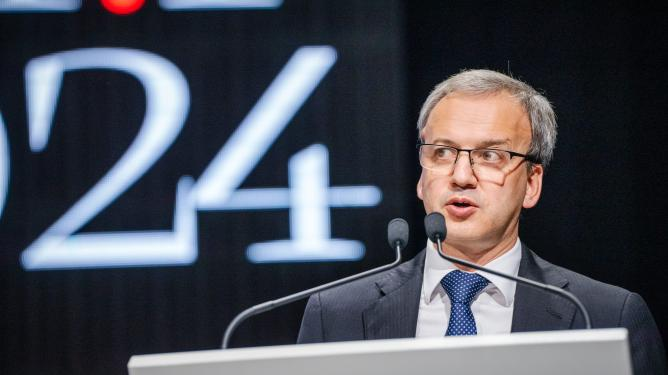

🚨 Última hora
📰 Notícia –Clash royale✨

o flamengo transforma criatividade em negocios e fecha parceria com clash royale
🎮 E-sports
📰 Notícia – Xadrez na Esports World Cup 2025
Título: Xadrez Faz Estreia Histórica na Esports World Cup 2025 com $1,5 Milhão em Prêmios

Leia mais sobre a estreia do xadrez na Esports World Cup 2025
O Chess.com e o GM Magnus Carlsen anunciaram uma parceria importante com a Esports World Cup Foundation (EWCF), marcando a estreia do xadrez competitivo na Esports World Cup 2025. O evento ocorrerá em Riade, na Arábia Saudita, de 31 de julho a 3 de agosto de 2025, com um prêmio total de $1,5 milhão. Essa colaboração visa apresentar o xadrez a uma nova geração de entusiastas de esports.